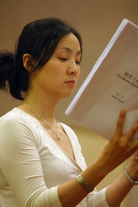

剧目介绍

旧站宣传文案介绍，《建筑大师》围绕一位功成名就的建筑大师展开：他在晚年重新面对青春、下一代以及自己长期隐藏的秘密。页面把该项目放在 2006 年“易卜生年”与“永远的易卜生国际戏剧季”的背景中。
原站同时介绍濮存昕、陶虹、林兆华以及舞美设计易立明等主创。由于这些介绍是 2006 年宣传材料，新版保留其历史属性，不将当年的头衔和履历自动更新为今天状态。
历史演出信息
2006 年 8 月 25–27 日、8 月 29 日–9 月 3 日；晚 7:30。首都剧场。旧站记录票价为 880（VIP）、500、380、280、180、100、50、30（学生票）。
剧组

导演：林兆华
旧站人物页列出其导演经历及代表作品。

主演：濮存昕
原站宣传资料介绍其北京人艺舞台经历。

主演：陶虹
原站宣传资料记录其运动员、影视及话剧经历。
舞美设计：易立明
旧站列出其为《建筑大师》担任舞美设计，并保存了大量 1989–2003 年间的国内外设计项目记录。这部分属于原始宣传档案，未在新版中重新核定每一项作品。